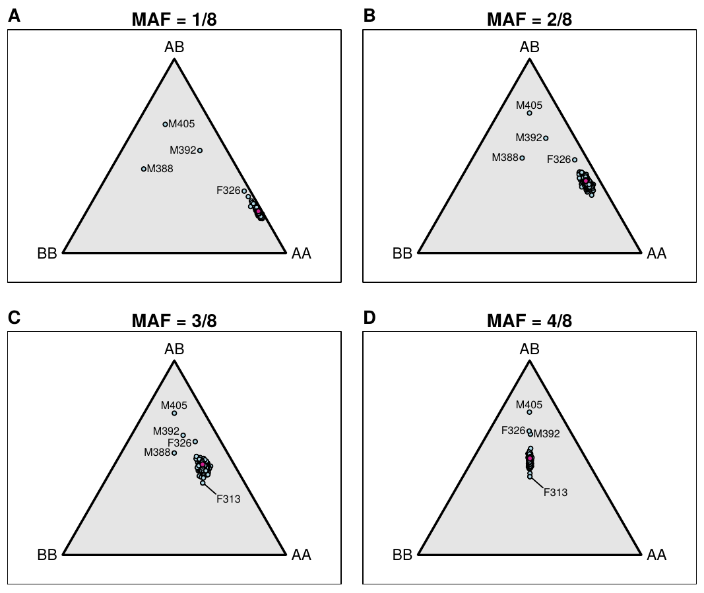

Broman KW, Gatti DM, Svenson KL, Sen Ś, Churchill GA (2019) Cleaning genotype data from Diversity Outbred mice. G3 9:1571-1579

Figure 4. — SNP genotype frequencies by mouse, for SNPs split by their minor allele frequency (MAF) in the eight founder strains. Trinomial probabilities are represented by points in an equilateral triangle using the distances to the three sides. Pink points indicate the expected distributions.